Content, der performt. Strategie, die verbindet.
Bewerbungsportfolio
Ich bin Social Media Managerin mit langjähriger, kanalübergreifender Social-Media- und Content-Praxis. Seit rund zwölf Jahren entwickle ich eigenständig Content, betreue verschiedene Social-Media-Präsenzen und baue Communities auf. Diese Praxis habe ich durch eine rund neunmonatige Tätigkeit als Social Media Managerin bei der Komenci Performance-Marketingagentur professionell vertieft und um strategische Analyse sowie agenturseitige Perspektiven erweitert.
Für die Dauer meiner beruflichen Weiterbildung bin ich aktuell freigestellt und nutze diese Zeit gezielt, um mein Profil um E-Commerce, Digitalmarketing und den praktischen Einsatz von KI-Tools zu erweitern. Dadurch verbinde ich vorhandene Social-Media- und Content-Erfahrung mit wachsender digitaler und wirtschaftlicher Kompetenz. Genau an dieser Schnittstelle aus Content, Strategie und Verkauf brauchen Marken heute Unterstützung.
Langfristig möchte ich diese Kombination in einem größeren, vielseitigen Unternehmensumfeld einbringen, mit breiteren Aufgabenfeldern und nachhaltigen Entwicklungsmöglichkeiten. Für mich ist das der konsequente nächste Schritt in meiner fachlichen Weiterentwicklung.
Über rund zwölf Jahre habe ich eigenständig verschiedene Social-Media-Kanäle entwickelt und betreut, Content erstellt und Communities aufgebaut. Einer meiner öffentlich zuordenbaren Kanäle hat aktuell mehr als 6.400 Follower. Parallel bin ich als Creatorin aktiv und habe Kooperationen zwischen Marken und Creatorn recherchiert und begleitet.
Social-Media-Strategie, Content-Erstellung, Kampagnenplanung, Community Management und die Auswertung relevanter Kennzahlen. Dabei habe ich meine eigenständige Praxis professionell vertieft und agenturseitige Perspektiven kennengelernt.
Neun Monate Vollzeit, neun Fachmodule, 1.620 Unterrichtseinheiten, ergänzt durch praktische Referenzprojekte. Das erste Modul „Social-Media Experte" habe ich bereits erfolgreich abgeschlossen; die weiteren Module zu E-Commerce, Digitalmarketing und KI folgen laufend.
Konzeption und Umsetzung einer professionellen Unternehmenswebsite mit lokaler SEO und digitaler Sichtbarkeit.
Case Study ansehenEntwicklung einer conversionorientierten Landingpage zur Leadgenerierung mit Meta Ads und direkter Kontaktmöglichkeit.
Case Study ansehenEntwicklung einer Performance-Marketing-Kampagne im Rahmen meiner Weiterbildung. Kein offizieller Auftrag der Marke Fritz-Kola.
Projekt ansehenFür DS Pflasterbau (Familienbetrieb, über 30 Jahre Erfahrung im Pflasterbau) habe ich die komplette Unternehmenswebsite konzipiert, redaktionell befüllt und live gebracht: Startseite, Leistungsseiten (Einfahrt, Terrasse, Hof, Gartenweg), Bauprojekte, Gewerbe-Seite, Team/Über uns sowie Impressum und Datenschutz.
Dazu gehörte eine ausführliche Keyword-Recherche (Zusammenführung und Bereinigung von Suchbegriffen aus mehreren Quellen inkl. Dubletten-Abgleich, Zuordnung von Suchvolumen, Wettbewerbsstärke und Suchabsicht), eine daraus abgeleitete Keyword-Landkarte mit Einordnung in die Stationen der Kundenreise (Aufmerksamkeit, Abwägung, Entscheidung, Bindung) sowie eine finale Seitenstruktur, die jede Leistungsseite gezielt auf die passenden Suchbegriffe ausrichtet. Ergänzt durch eine Wettbewerbsanalyse regionaler Anbieter, technische Bauregeln (u.a. Barrierearmut, Ladezeiten, Bildkomprimierung) sowie rechtlich abgestimmte Datenschutz- und Impressumstexte. Kein Übungsprojekt: Die Seite ist live und wird aktiv von echten Kunden genutzt.
Live-Website, direkt eingebettet zum Durchklicken:
Falls die Vorschau nicht lädt: ds-pflasterbau.de direkt öffnen ↗
Bevor die Website entstand, habe ich im ersten Modul meiner Weiterbildung als Ausgangspunkt eine vollständige Social-Media-Strategie für DS Pflasterbau erarbeitet: Zielgruppenanalyse, Kanalstrategie, Content-Planung und Redaktionsplan. Daraus hat sich das größere Gesamtprojekt entwickelt, zu dem inzwischen auch die reale Website und die Kampagnen-Landingpage gehören.
Ausgangslage/Audit, Kanalstrategie, Instagram- und Facebook-Konzept, Video-Content und ein 20-Tage-Redaktionsplan. Zum Durchklicken:
Einmal in die Präsentation klicken, dann funktionieren Pfeiltasten und der Vorher/Nachher-Vergleich wie gewohnt.
Vorher/Nachher aus dem Konzept, fest als Bildpaare (funktioniert auch ohne Klicken):
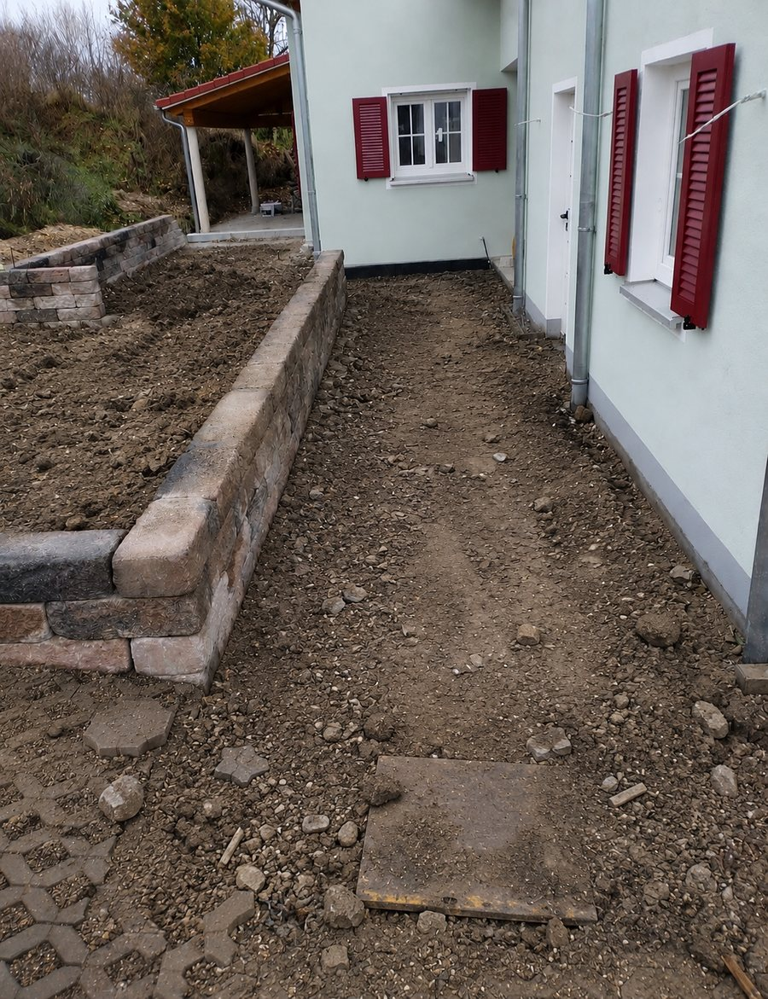
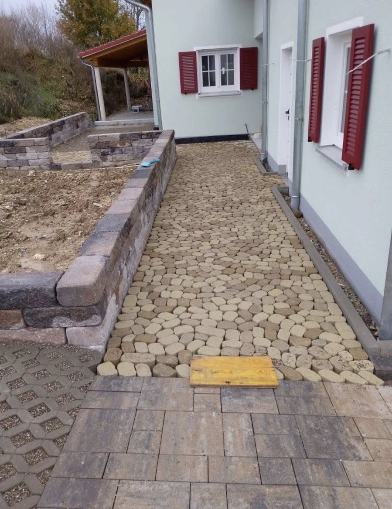
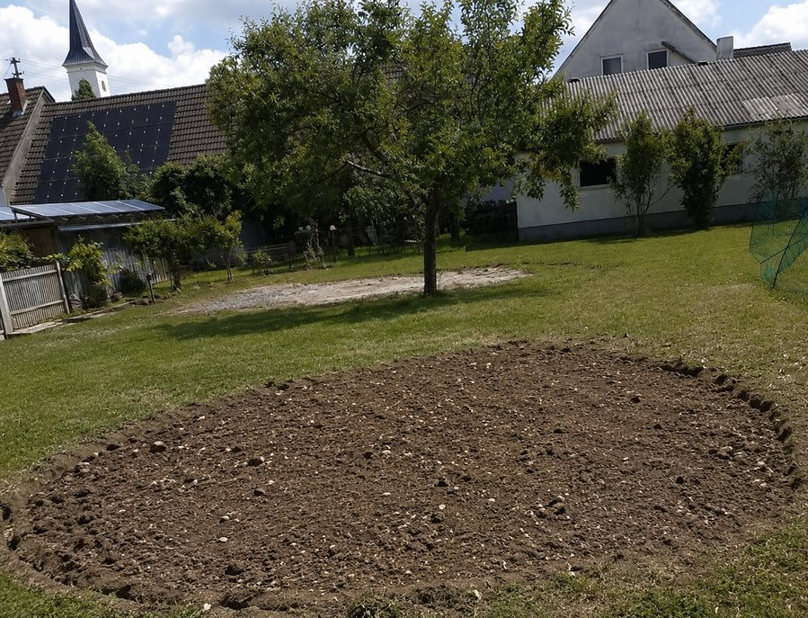
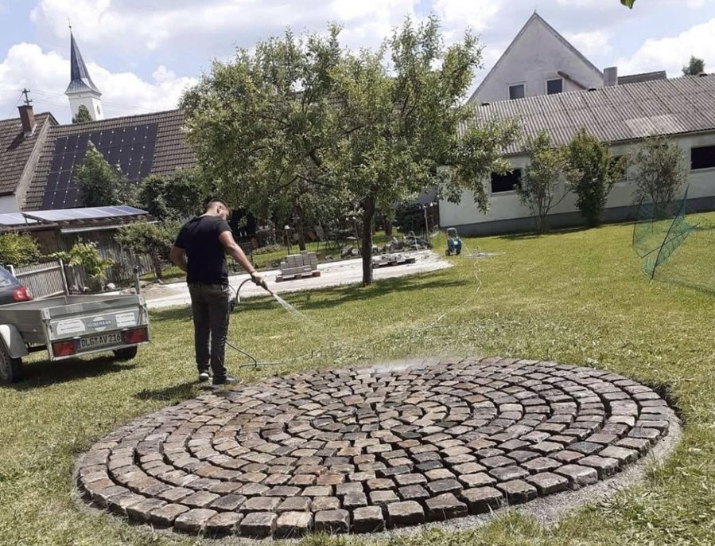
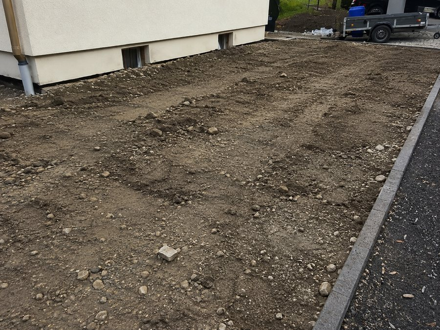
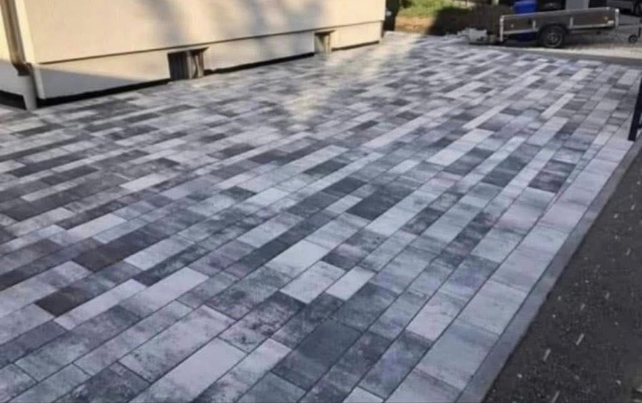
Eigenständige, schlanke Landingpage außerhalb der Hauptnavigation, gezielt für eine lokale Meta-Ads-Kampagne für Dillingen und Umgebung gebaut (noindex, follow, bewusst nicht für die normale Google-Suche gedacht, sondern nur für den Kampagnen-Traffic). Enthält Meta-Pixel-Einbindung für Kampagnen-Tracking, DSGVO-konform über Cookiebot erst nach Einwilligung freigeschaltet, sowie eine klare, direkte Handlungsaufforderung (kostenlose Beratung anfragen) ohne Ablenkung durch Menüpunkte. Gehört zum selben Gesamtprojekt wie die Unternehmenswebsite, ist aber bewusst als eigenständige, schlankere Seite für Paid-Traffic konzipiert.
Falls die Vorschau nicht lädt: Landingpage direkt öffnen ↗
Zwei eigenständige Kampagnenkonzepte, die bewusst auf aktiven Community-Einbezug statt klassischer Werbebotschaft setzen: eine TikTok-Challenge rund um den eigenen „Fritz-Moment" und ein Q&A-Format, das Transparenz statt PR-Floskeln zeigt.
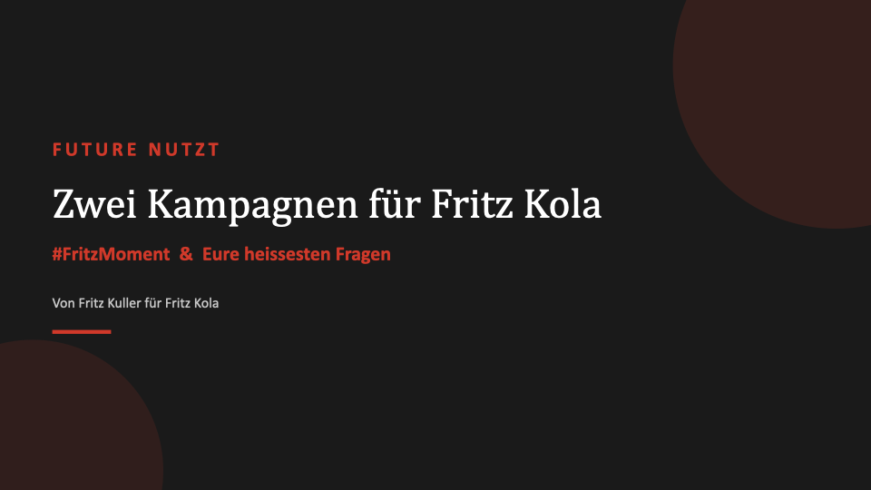
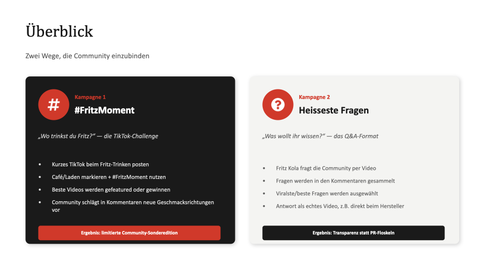
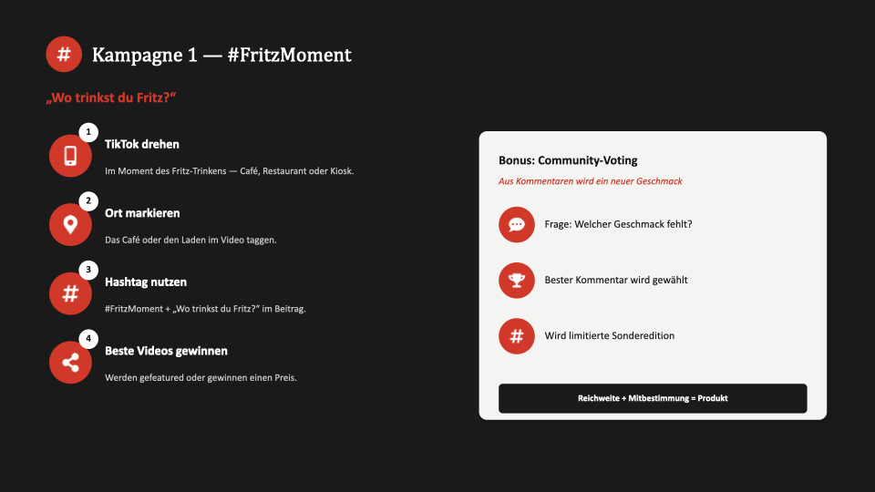
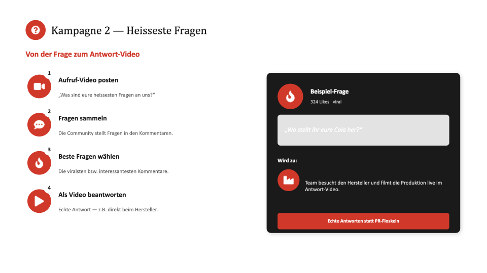
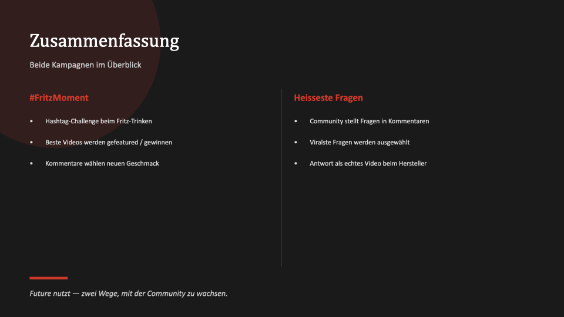
Als Übungsaufgabe im ersten Modul meiner Weiterbildung habe ich für einen selbst gewählten Handwerksbetrieb eine vollständige Social-Media-Strategie entwickelt: Ausgangslage/Audit, Kanalstrategie, Instagram- und Facebook-Konzept, Video-Content und einen 20-Tage-Redaktionsplan. Zum Durchklicken:
Einmal in die Präsentation klicken, dann funktionieren Pfeiltasten und der Vorher/Nachher-Vergleich wie gewohnt.
Vorher/Nachher aus dem Konzept, fest als Bildpaare (funktioniert auch ohne Klicken):
Ich befinde mich aktuell in der neunmonatigen Weiterbildung „E-Commerce- und Digitalmarketingmanagerin" bei der Akademie für digitale Zukunft (9 Module, 1.620 Unterrichtseinheiten, Mai 2026 bis voraussichtlich März 2027). Drei Module habe ich bereits erfolgreich abgeschlossen, die weiteren Module und Zertifikate baue ich fortlaufend aus:
Amine Demir · Bauerngasse 19 · 86637 Wertingen
Tel. 0152 5259 2437 · aminedemir560@gmail.com